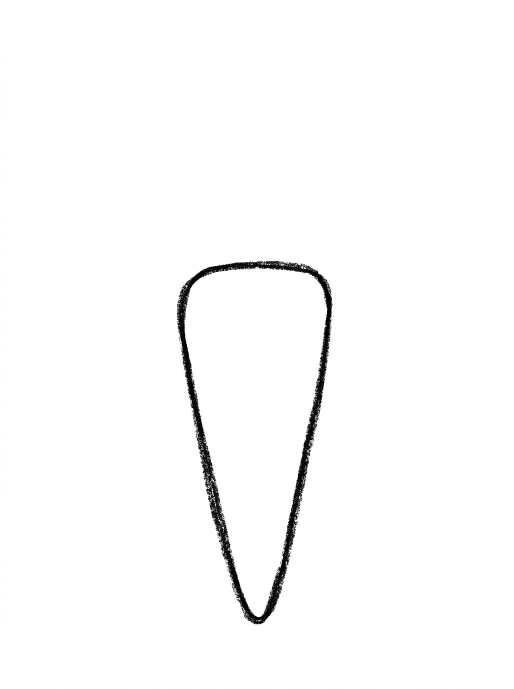
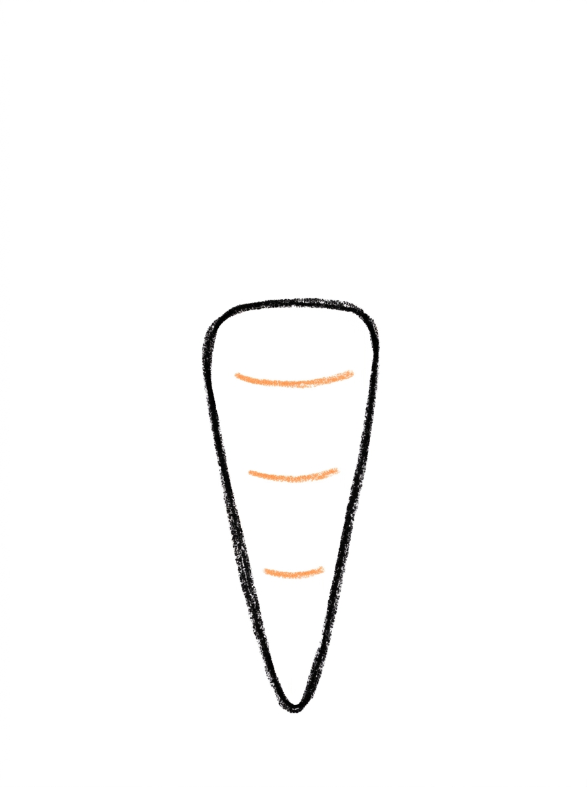
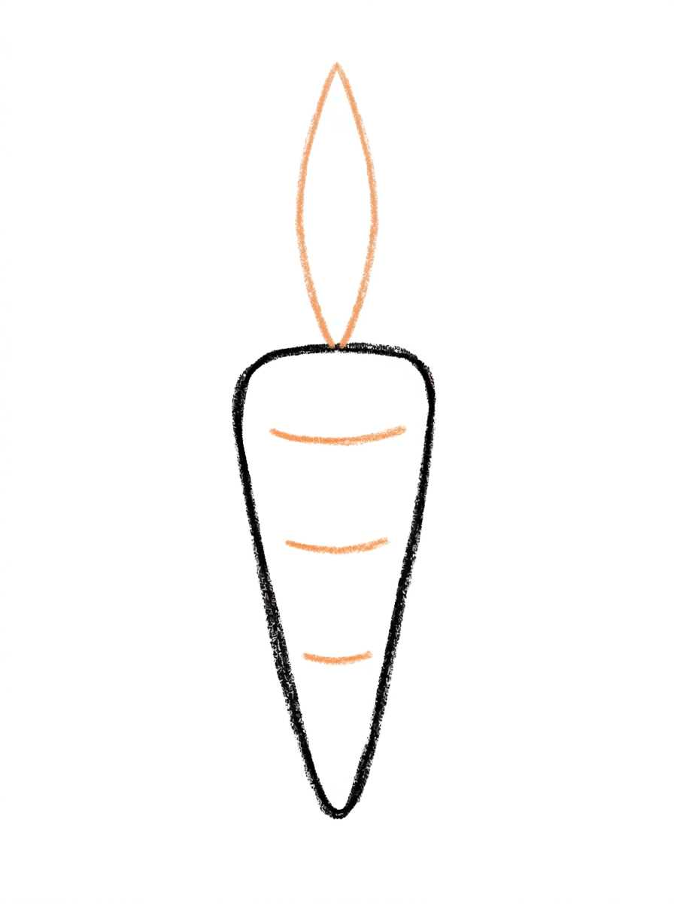
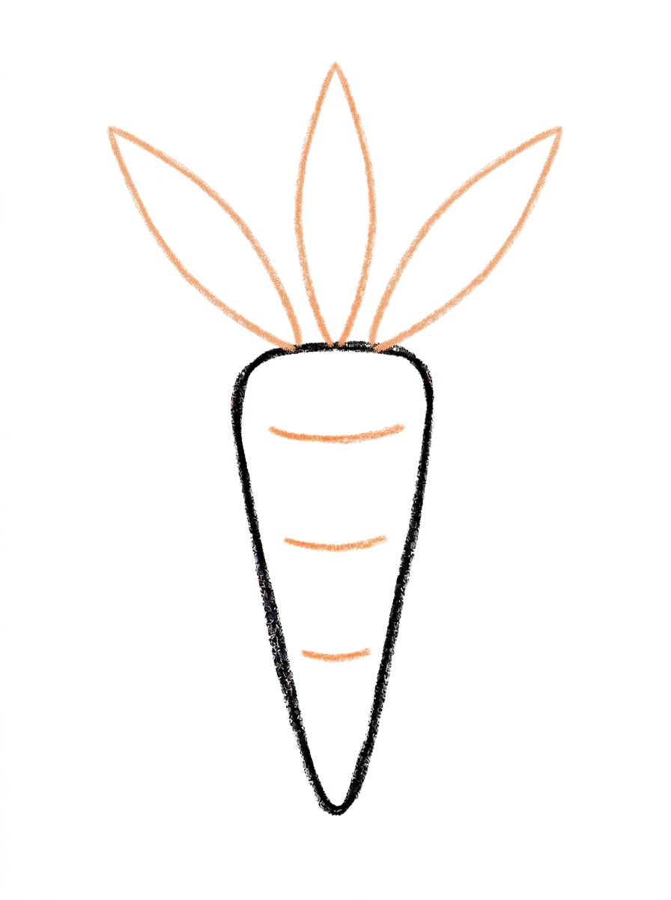
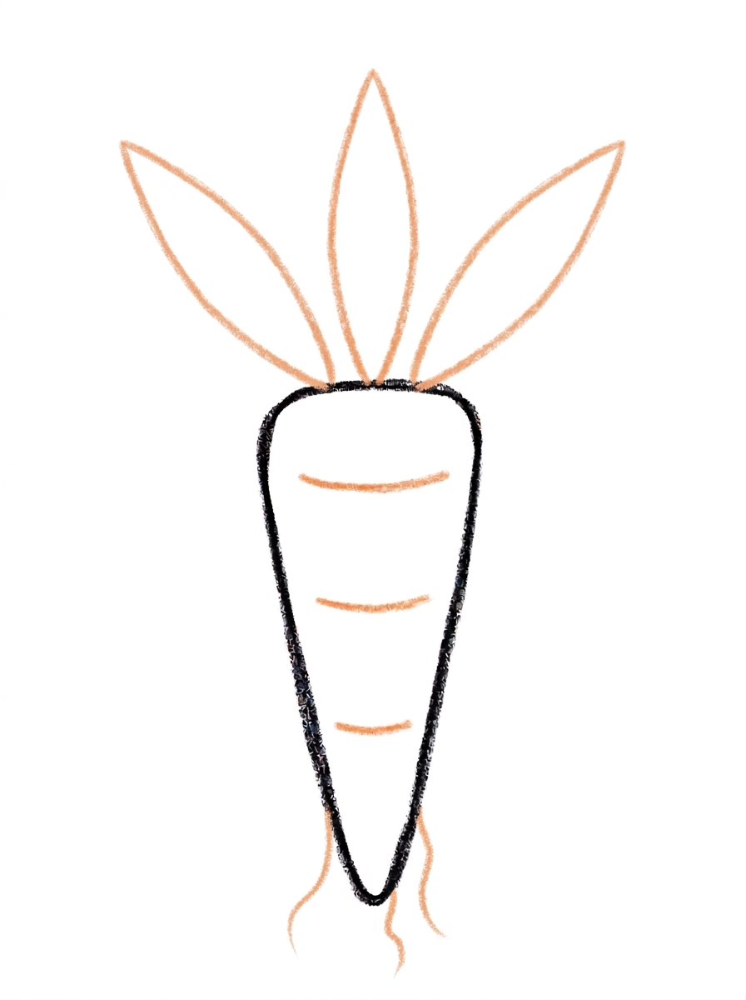
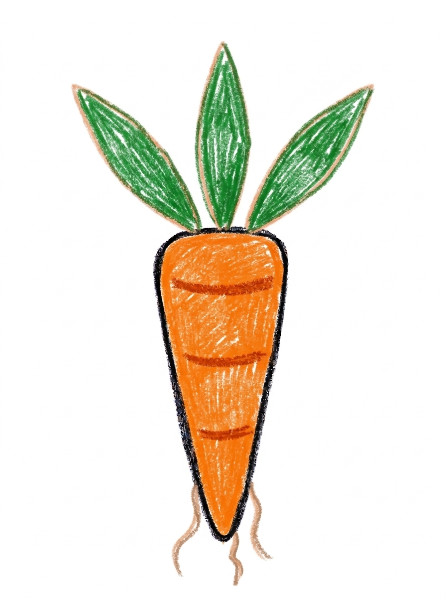

Carrot Drawing for Kids How to Draw A Carrot in 6 Easy Steps
Quick Answer
Draw a carrot in six easy steps: a long triangle root, three curved ridge lines, one tall middle leaf, two side leaves, and a few tiny root hairs at the tip. Color it bright orange with green leaves. Made for ages 3 and up — no signup needed, just print and draw.
At a Glance
- Subject: How to draw a carrot
- Ages: 3+
- Steps: 6 steps
- Time: ~10 min
- Difficulty: Easy
- Supplies: Paper, crayons
A carrot is one of the friendliest first drawings there is — one long triangle for the root and a leafy top, and you're nearly done. This one adds ridge lines and a few tiny root hairs, so it looks freshly pulled from the garden.
✏️ Draw Your Carrot in 6 Easy Steps
One step per box — this step by step carrot drawing shows each new part in a different color so kids can see exactly what changed.
Step 1: The Root

Draw one long triangle pointing down, with a rounded flat top and a rounded point at the bottom — that's the carrot root.
Step 2: The Ridge Lines

Draw three short curved lines across the root, spaced evenly down it.
Step 3: The Middle Leaf

Draw one tall pointed leaf standing straight up from the center of the root's top.
Step 4: The Side Leaves

Add one pointed leaf fanning out on each side of the middle leaf.
Step 5: The Root Hairs

Draw a few tiny wavy lines hanging down from the pointed tip of the root — those are the root hairs.
Step 6: Color It In

Color your carrot! Bright orange for the root with dark orange ridge lines, green leaves, and pale brown root hairs. Great drawing!
📊 Carrot Drawing by Age
Every age can join in — just adjust the job.
| Age | What they can do | Tip |
|---|---|---|
| 3-4 | Draw the long triangle root and color it bright orange. | Describe the root as an upside-down ice cream cone with soft corners — long and pointy is all a carrot needs. |
| 4-5 | Add the three ridge lines and the tall middle leaf. | Space the ridges out loud together — one near the top, one in the middle, one near the tip — so they land evenly. |
| 6+ | Finish all six steps, including the two side leaves and the few tiny root hairs at the tip. | Root hairs should stay tiny and few — a little fringe at the very tip, not a beard. |
🖨️ Download Your Free Carrot Drawing Printable
The printable lays out all 6 steps one per box, big enough for little hands — kids draw right alongside each step.
⬇️ Open Free Printable 🖨️ Print🎁 Free printable for ages 3+
🥕 Carrot Garden Page
Give your carrot a garden: draw a soil line across the bottom of the page, plant a whole row of carrots in different sizes along it with just their leafy tops and shoulders showing, and add one visitor — a bunny peeking in from the edge. Then decide together whose garden it is and what happens when the bunny gets in. Write one sentence about the garden under the drawing (or dictate it for a grown-up to write).
What You'll Need to Draw A Carrot
All you need is a pencil, an eraser, and crayons or markers. For the colors in the tutorial, have bright orange ready for the root, dark orange for the ridge lines, green for the leaves, and pale brown for the root hairs. Regular printer paper or a sketchbook both work.
What They're Learning
This tutorial practices drawing a long, controlled triangle with rounded corners, spacing three lines evenly down a shape (an early measuring skill), and leaf symmetry — one tall leaf in the center balanced by one on each side. The root hairs add fine-motor practice at a very small scale, and the whole page rewards looking closely at a real object before drawing it.
Make It Yours
Try a garden row of carrots in different sizes, a purple or rainbow carrot, a carrot with a smiley face for a younger sibling, or a giant carrot with extra-tall leaves. A bunny head peeking from behind the carrot turns it into a story in one extra shape.
🛒 Our Favorite Drawing Supplies
These are the supplies we reach for in our own home — washable (because kids), quality paper, and enough colors to avoid fights.
As an Amazon Associate, MomYouNeedThis earns from qualifying purchases — at no extra cost to you.
💡 Carrot Drawing Tips for Parents
Step 1 carries the drawing: long and slim reads as a carrot, short and wide reads as a turnip. If your child's triangle comes out stubby, don't restart — name it a baby carrot or draw a second, longer one beside it. Round off the top corners and the point as they draw; sharp corners are what make it look like a traffic cone instead of a vegetable.
At step 2, spacing is the skill: one ridge near the top, one in the middle, one near the tip. And at step 5, model restraint — draw your own few root hairs first if needed, small and sparse. Kids tend to add twenty; the picture works because there are only a few.
🥕 Carrots in the Real World
The orange part of a carrot is a root — the plant's pantry, where it stores food underground while its feathery green tops grow in the sun. Most carrots at the store are orange, but carrots also grow in purple, yellow, red, and white, and they were not orange at all in the beginning: farmers bred the orange kind a few hundred years ago and it took over.
Storybooks say rabbits love carrots, and rabbits do enjoy a small piece as a treat — but a real rabbit's everyday dinner is hay and grass. The tops in the drawing matter too: you can tell a carrot is fresh when its greens stand up bright and feathery.
✋ Warm-Up: Long and Longer
Warm up with a length game. Draw a carrot shape on scrap paper, then a longer one under it, then the longest carrot that fits on the page. Long, slim triangles with rounded corners are the whole game here, and drawing three in a row — short, medium, giant — teaches the shape faster than any single careful attempt.
Leafy tops are free scribble practice: a burst of quick green curves, the messier the better. Save careful hands for the root, and remember the cook's rule for this page — there is no wrong length for a carrot, only different ages of carrot.
📖 Give Your Carrot a Story
Somebody is going to pull this carrot out of the ground. Who planted it, and who is hoping to eat it — a rabbit, a chef, a horse, a very patient gardener? A dictated sentence or two under the drawing turns a vegetable into a character with plans.
The rabbit tutorial is waiting for exactly this carrot. Drawing the rabbit next gives the carrot a destiny and your child a matched pair — the snack and the snacker, in two sittings. Every carrot patch deserves a visitor: draw how to draw a rabbit coming for a nibble, then sweeten the garden with how to draw a strawberry.
❓ Carrot Drawing FAQs
What is the easiest way to draw a carrot?
Draw one long triangle pointing down for the root — that single shape is most of the carrot. Then add three curved ridge lines, a tall leaf in the middle with one leaf fanning out on each side, and a few tiny root hairs at the tip.
What age is this carrot drawing for?
It's made for ages 3 and up. The root is one simple triangle, and younger kids can draw it and the coloring while older kids add the ridge lines, leaves, and root hairs themselves.
What supplies do we need?
A pencil, an eraser, paper, and crayons or markers. For colors you'll want bright orange, dark orange for the ridge lines, green for the leaves, and pale brown for the root hairs.
Is the printable really free?
Yes — every printable on MomYouNeedThis is 100% free, including this carrot drawing tutorial. There is no signup, no email, and no catch — just download, print, and draw.
How do I print it?
Open the PDF and choose Print, then set the scale to 100% (sometimes called Actual Size) so the steps print at full size. The tutorial is designed for regular US Letter paper, and plain printer paper works perfectly.
Why does a carrot have lines across it?
Real carrots have bumpy little rings around the root where tiny side roots grow out. Three short curved lines, spaced down the root, copy that texture and instantly make a plain triangle look like a carrot.
What are the little hairs at the bottom?
Those are root hairs — the fine, thread-like roots a real carrot grows at its tip to drink water from the soil. Just a few tiny wavy lines hanging from the point is all it takes.
Can my carrot be a different color?
Yes — real carrots grow in purple, yellow, white, and red, not just orange. Keep the leaves green and the shape long and pointy, and a purple carrot still reads as a carrot.
📚 Keep Exploring
- ✏️ All 74 Drawing Tutorials 74 free step-by-step drawing tutorials for kids.
- 🍔 Food Coloring Free food coloring pages for kids.
- ✏️ Drawing Practice Free printable drawing pre-writing worksheet for toddlers.